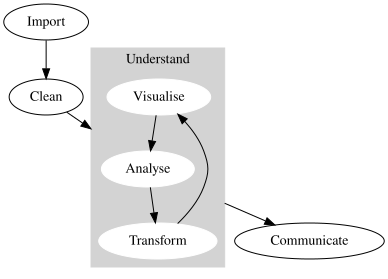

First Steps
Data science is an exciting discipline that allows you to turn raw data into understanding, insight, and knowledge. The goal of “Python for Data Science” is to help you learn the most important tools and workflows in Python that will allow you to do data science. After reading this book, you’ll have the tools to tackle a wide variety of data science challenges!
What you will learn
Data science is a vast field, and there’s no way you can master it all by reading a single book. This book aims to give you a solid foundation in the most important tools and enough knowledge to find the resources to learn more when necessary. Our model of the tools needed in a typical data science project looks something like this:
First you must import your data into Python. This typically means that you take data stored in a file, database, or web application programming interface (API), and load it into a ‘data frame’ in Python. You can’t data science without data!
Once you’ve imported your data, it is usually necessary to clean or tidy it. Cleaning your data means storing it in a consistent form that matches the semantics of the dataset with the way it is stored. This is fancy way of saying that the data are in a format that you can work easily with! So-called “tidy” data is a special case of structured tabular data in which each column is a variable, and each row is an observation (but not all data are tabular). Clean data are important because consistent structure lets you focus your efforts on answering questions about the data, not fighting to get the data into the right form for different functions.
Once you have clean data, a common next step is to transform it. Transformation includes narrowing in on observations of interest (like all people in one city, or all data from the last year), creating new variables that are functions of existing variables (like computing speed from distance and time), and calculating a set of summary statistics (like counts or means).
Once you have clean data with the variables you need, there are two main engines of knowledge generation: visualisation and analysis. These have complementary strengths and weaknesses so any real analysis will iterate between them many times.
Visualisation is a fundamentally human activity. A good visualisation will show you things that you did not expect, or raise new questions about the data. A good visualisation might also hint that you’re asking the wrong question, or that you need to collect different data. Visualisations can surprise you! They come in different flavours.
Analysis is a topic that’s too big to cover in this book. It might involve running models, doing statistics, answering specific questions, or drawing a narrative out of the data. It’s an important skill, but one that’s highly dependent on the domain of application.
The last step of data science is communication, an absolutely critical part of any data analysis project. It doesn’t matter how well your models and visualisation have led you to understand the data unless you can also communicate your results to others.
Surrounding all these tools is programming. Programming is a cross-cutting tool that you use in nearly every part of a data science project. You don’t need to be an expert programmer to be a successful data scientist, but learning more about programming pays off, because becoming a better programmer allows you to automate common tasks, and solve new problems with greater ease.
You’ll use these tools in every data science project but, for most projects, they won’t be enough alone. There’s a rough 80/20 rule in play; you can tackle about 80% of every project using the tools that you’ll learn in this book, but you’ll need other tools to tackle the remaining 20%. Throughout this book, we’ll point you to resources where you can learn more.
How this book is organised
The previous description of the tools of data science is organised roughly according to the order in which you use them in an analysis (although of course you’ll iterate through them multiple times). In our experience, however, this is not the best way to learn them. This is because starting with data ingest and cleaning tends to be either routine and boring or weird and frustrating—both of which can be offputting when you’re starting to learn a new subject!
Instead, we’ll start with visualisation and transformation of data that’s already been imported and cleaned. That way, when you ingest and clean your own data, your motivation will stay high because you know the pain is worth the effort.
Within each chapter, we try and adhere to a similar pattern: start with some motivating examples so you can see the bigger picture, and then dive into the details. Each section of the book is paired with exercises to help you practice what you’ve learned. Although it can be tempting to skip the exercises, there’s no better way to learn than practicing on real problems.
What you won’t learn
There are a number of important topics that this book doesn’t cover. We believe it’s important to stay ruthlessly focused on the essentials so you can get up and running as quickly as possible. That means this book can’t cover every important topic.
Modelling
Modelling is incredibly important for data science, but it’s a big topic, and unfortunately, we just don’t have the space to give it the coverage it deserves here. Some great places to start are the sklearn tutorials for machine learning, Causal inference for the brave and true and the Coding for Economists’ pages on regression and Bayesian inference.
Big data
This book focuses on small, “in-memory” (more or less this means you can open them on your laptop) datasets. This is the right place to start because you can’t tackle big data unless you have experience with small data. The tools you learn in this book will easily handle hundreds of megabytes of data, and with a little care, you can typically use them to work with 1-2 Gb (gigabytes) of data. If you’re routinely working with larger data (10-100 Gb, say), you should learn more about databases and tools such as Ibis that let you interact with them.
(If your data is bigger than this, carefully consider whether your big data problem is actually a small data problem in disguise. While the complete data set might be big, often the data needed to answer a specific question is small. You might be able to find a subset, subsample, or summary that fits in memory and still allows you to answer the question that you’re interested in. The challenge here is finding the right small data, which often requires a lot of iteration.)
Another possibility is that your big data problem is actually a large number of small data problems in disguise. Each individual problem might fit in memory, but you have millions of them. For example, you might want to fit a model to each person in your dataset. This would be trivial if you had just 10 or 100 people, but instead you have a million. Fortunately, each problem is independent of the others (a setup that is sometimes called embarrassingly parallel), so you just need a system (like Hadoop or Spark) that allows you to send different datasets to different computers for processing. Once you’ve figured out how to answer your question for a single subset using the tools described in this book, you can learn new tools like pyspark to solve it for the full dataset.
Julia and R
In this book, you won’t learn anything about R or Julia, which are both sometimes used for data science. This isn’t because we think these tools are bad. They’re not! In this book you’ll see what we think of as the three critical tools for data science:
- Python
- SQL
- command line scripting
These are the three languages that will get you a job as a data scientist, and that’s a very good reason to focus on them. We’ll spend most of our time with Python, and for good reason. Python is usually ranked as the first or second most popular programming language in the world and, just as importantly, it’s also one of the easiest to learn. It’s a general purpose language, which means it can perform a wide range of tasks. This combination of features is why people say Python has a low floor and a high ceiling. It’s also very versatile; the joke goes that Python is the 2nd best language at everything, and there’s some truth to that (although Python is 1st best at some tasks, like machine learning). But a language that covers such a lot of ground is also very useful; and Python is widely used across industry, academia, and the public sector, and is often taught in schools too.
We think Python is a great place to start your data science journey because it is the most popular tool for data science and programming more generally, with a large community behind it.
Details about this book
This book was compiled with the following version of Python:
Compiled with Python version: 3.12.3 (main, Mar 3 2026, 12:15:18) [GCC 13.3.0]Acknowledgements
This book is a very close reproduction of the book R for Data Science (2e) and was inspired by its efforts to make data science more accessible in an easy to digest book.